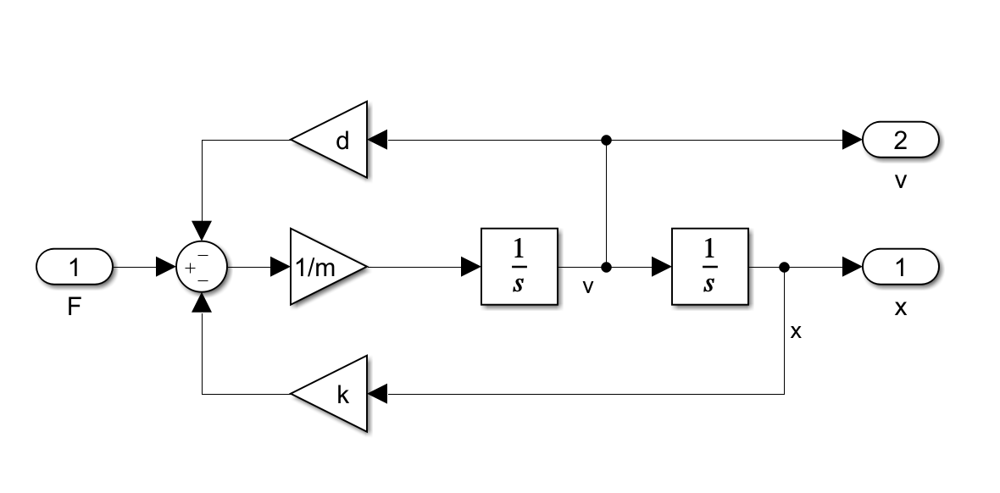

快速开始
Ligral 基于 .NET core 3.1 开发，完美适配 .NET 5，可以运行在 Windows 和 Linux 系统上 （Windows 10 以及 Ubuntu 20、Debian 10 测试通过，Mac 系统尚未测试） 。只要简单几个步骤就可以让 Ligral 运行在自己的机器上，让我们马上开始吧！
下载安装
可执行程序
Windows 系统
目前，Ligral v0.1.0 beta 发行版在 Gitee 开放下载。打开链接就可以看到打包好了的 ligral.exe。
下载到本地就可以运行了，但是十分建议您把 ligral 添加到环境变量。具体操作为
- 按下开始建，输入控制面板；
- 在控制面板右上方搜索环境变量；
- 打开环境变量，在上方方框里找到 Path 变量；
- 双击打开，把 ligral 所在文件夹地址粘贴到新的一行；
此操作适用于 Windows 10 系统。如果您的操作系统是 Windows 7 或者更低版本，操作可能略有不同。
安装成功后，您可以在任意文件夹打开 cmd（强烈建议 Windows 10 用户下载安装 Windows Terminal），输入
ligral
，应当能看到如下输出：
Ligral is a Literal and Graphical Simulation Language.
Use --help option to get help infomation.
*******************************************************
Type your ligral script below, and use 'run' command to execute.
>>>
这是 v0.1.0 版本中带有的一个 ligral shell 环境，在此您可以逐行输入代码并即使解析。但是考虑到这项功能没有应用场景，在未来的版本中可能会删除。
Linux 系统
此版本暂未提供 Linux 系统的打包程序，请跳转至源码安装。
源码安装
无论是在 Windows 系统下还是 Linux 系统下，源码安装的方式都是一样的。首先，您需要下载安装 .NET core 3.1 开发工具包，即 SDK。不过下载 .NET 5 也是可以的，其性能更优，但是不是长期支持版本（LTS）。如果您的机器安装的是 Windows 系统，可以前往 .NET 官网 下载；Linux 上安装稍微复杂一些，但好在微软准备了一份 安装教程 。
如果您的机器已经安装好了 git，您可以打开终端，在准备存放 ligral 的文件夹运行以下命令（二选一）：
git clone https://gitee.com/junruoyu-zheng/ligral.git
git clone https://github.com/jry-zheng/ligral.git
如果没有安装 git，您可以去 Gitee 或者 GitHub 网站上点击下载 ligral。以 Gitee 为例：
打开 ligral 文件夹后，在命令里运行：
cd ligral
dotnet build
如果您看到以下提示信息，说明以及编译成功了：
Microsoft (R) Build Engine version 16.8.0-preview-20475-05+aed5e7ed0 for .NET
Copyright (C) Microsoft Corporation. All rights reserved.
Determining projects to restore...
All projects are up-to-date for restore.
You are using a preview version of .NET. See: https://aka.ms/dotnet-core-preview
ligral -> C:\Users\zheng\Documents\ligral\bin\Debug\netcoreapp3.1\ligral.dll
Build succeeded.
0 Warning(s)
0 Error(s)
Time Elapsed 00:00:02.30
第一次编译可能需要进行还原（这些都是自动运行的），会需要较长的时间，视网络情况。编译成功后，建议把上面提示信息中“Build succeeded”上一行的文件所在文件夹添加到环境变量，具体操作参考上一节。
其他配置
由于 ligral 中的绘图模块依赖于 python3 的 matplotlib，因此如果您需要用到绘图时，还需要下载 python3，并且安装 numpy、matplotlib、pandas 三个包。目前暂不清楚对这三个包的最低版本要求是什么，但是较新版本都应是可用的。
Windows 系统可以从 python 官网 下载，安装时最好把“添加到环境变量”；Linux 则一般自带 python，也可以通过命令安装（视系统不同选用的命令也可能不同）：
sudo apt-get install python
sudo yum install python
安装完 python 之后，确保 python 和 pip 都是可调用的，运行以下命令：
pip install numpy
pip install matplotlib
pip install pandas
如果 pip 不可调用，可以使用
python -m pip
代替。如果网速较慢，可以在命令后面加上参数
pip install *** -i https://mirrors.cloud.tencent.com/pypi/simple
使用腾讯镜像。
如果您不需要用到绘图工具，仅需要将仿真的结果保存到 CSV 文件，您也可以忽略此步骤，程序仍然可以正确运行。
第一次运行
Hello World!
安装完 ligral 之后，您可以尝试运行一些简单的“Hello World”程序。虽然 ligral 确实不能打印字符串，但是您也可以尝试以下最简单的仿真模型：
conf step_size = 1;
conf stop_time = 1;
1 -> Print;
第一句和第二句命令，以
conf
为起始，表示这是配置命令。顾名思义，这两句的意思是设置仿真步长为 1（秒），仿真时长也为 1（秒）。这么做的目的是为了下一句打印语句不要出现得太多，如果没有的话不影响程序的运行。第三句也很简单，就是把一个常数 1 发送给打印输出模块
Print
。新建一个文件 test1.lig，输入以上内容并保存，在终端运行：
ligral test.lig
您将看到以下输出：
Time: 0.00 Print1 = 1
Time: 1.00 Print1 = 1
这表明 ligral 程序已经正常工作了。
开始浏览 examples
您可以在 Gitee 或者 GitHub 仓库的 examples 中找到一些简单的工程。比如 MassSpringDamper 工程，描述的是一个弹簧阻尼质量块系统。如果您学过自动控制原理，您应该很熟悉以下的框图：
其中 sys 是 Simulink 中的 SubSystem，双击进入后可以看到其内部结构为：

运行以上 Simulink 程序，得到的仿真结果是
在 ligral 中，与 SubSystem 相对应的概念是 route。在 MassSpringDamper 工程里，我们定义了这一模块，并且调用它生成实例（ 这是 ligral 与 Simulink 最为不同的地方之一！ ），得到相同的模型，代码如下：
# 模块类名：MassSpringDamper
# 参数：
# m： 质量
# k： 刚度
# d： 阻尼
# v0：初始速度
# x0：初始位置
# 输入：
# F： 外部作用力
# 输出：
# v：速度
# x：位置
route MassSpringDamper(m, k, d, x0, v0; F; x, v)
F-k*x-d*v -> Gain{value:1/m} -> Integrator{initial:v0} -> v;
v -> Integrator{initial:x0} -> x;
end
# 定义一个 Step 信号
Step[F]{start:3, level:5};
# 实例化一个 MassSpringDamper 对象
MassSpringDamper[sys]{m:0.1, k:10, d:0.3, x0:1, v0: 0};
# 连接模块
F -> sys;
sys:x[position] -> Scope;
(sys:x, sys:v[velocity]) -> PhaseDiagram;
其中
#
开头的语句是注释，执行中被忽略。更详尽的代码注释请看 examples 文件夹中的工程文件。您可以先尝试着复制这段代码粘贴到 test_msd.lig 文件中，并运行。您将看到这样的结果：

可以看到，ligral 求解该模型得到了和 Simulink 一样的结果。
结束
到此为止，恭喜您完成了快速开始的全部内容！需要继续深入了解 ligral 语法等问题，请看用户指引。如果有问题，可以发 Issue 或者 给我写信 。